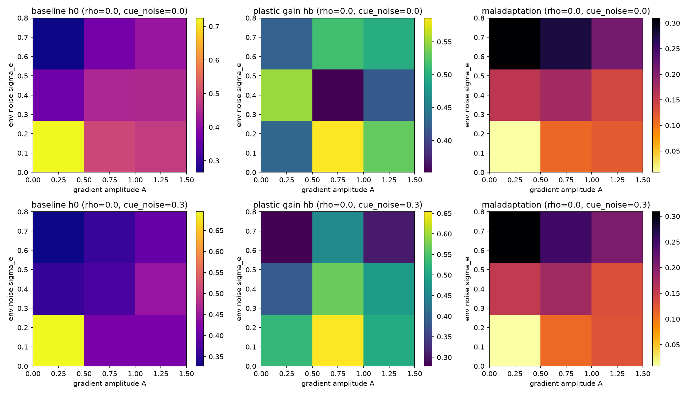
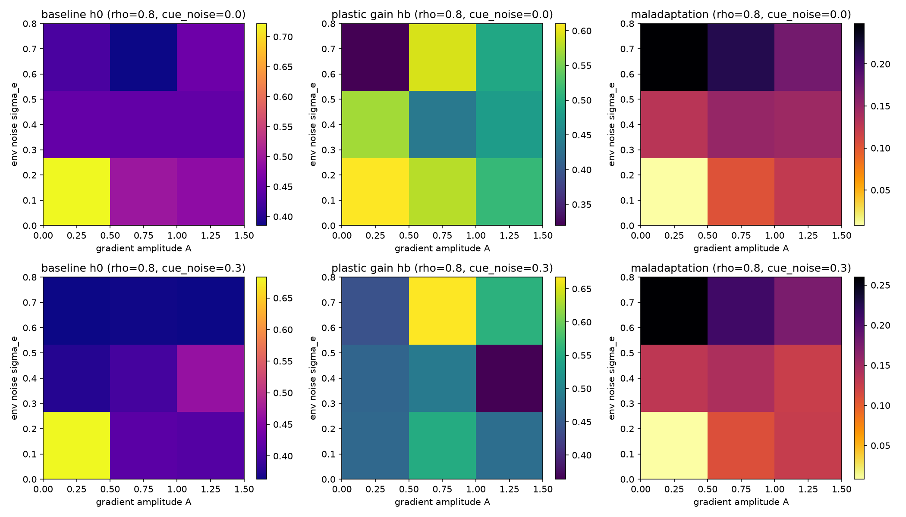

This cycle extends the dormancy trade-off of Cycle 18 by giving each offspring a
plastic dormancy response. Effective dormancy is
h_eff = clamp(h0 + hb * cue, 0, 1), where cue is the
squared phenotypic mismatch to the local environmental optimum. We ask how
reliable the cue must be for plasticity to evolve, and whether plasticity
replaces or merely augments unconditional seed banking.
cue_noise = 0.0): hb evolves to
0.4–0.6 and h_eff correlates strongly with true maladaptation.cue_noise = 0.3): hb is reduced;
unconditional h0 carries more of the bet-hedging load.h0 and hb depends on cue reliability.Top row: perfect cue. Bottom row: noisy cue. Columns: baseline h0,
plastic gain hb, maladaptation.


Dashboard generated for NoiseGarden Cycle 19.